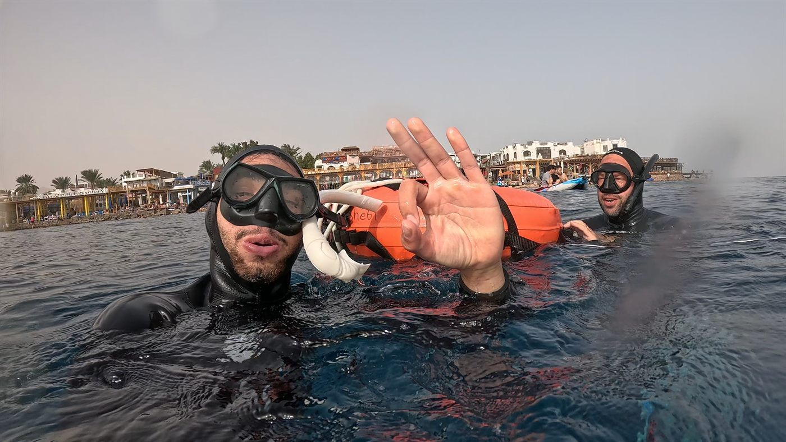

Most people trying to hold their breath longer are solving the wrong problem. They breathe deeper, pack their lungs tighter, meditate harder. Then they hit a wall — the same wall, at roughly the same time — and assume their body just isn't built for it.
The wall isn't where they think it is. And the limit isn't what they think it is.
The signal your body sends — and what it actually means
When you hold your breath, your body consumes oxygen and produces carbon dioxide (CO₂) as a byproduct. The urge to breathe — that tightening in your chest, the diaphragm contractions, the creeping sense of urgency — is not your oxygen running out. It is CO₂ accumulating in your blood, triggering a pressure-sensitive reflex your brain reads as: pay attention now.
This is not a flaw. Evolution set this alarm early — deliberately, conservatively — to fire long before any real danger arrives. The gap between the moment you first feel the urge and the moment you actually need air is enormous. In an untrained person, it can be 30 seconds to a full minute. In a trained freediver, that window expands dramatically.
Understanding this distinction changes everything. You are not running out of oxygen. You are reacting to a signal. And signals are trainable.
The CO₂ gap — what you can train
~40%
O₂ still available when the urge to breathe first fires
Dive 1
CO₂ threshold adaptation begins in your first session
Weeks
For measurable long-term threshold increase
What CO₂ tolerance actually is
CO₂ tolerance is not about suppressing the signal. It is about learning to hear it without reacting — letting it pass through awareness without triggering the full panic cascade. This is a combination of physiological adaptation and psychological skill. You need both, and they develop at different rates.
The physiological layer
Your body's CO₂ chemoreceptors — the sensors that detect rising CO₂ and trigger the urge to breathe — adapt with exposure. Regular breath-hold training slowly recalibrates what your body considers a tolerable CO₂ level. Over time, the alarm fires later. Your threshold rises. The silence before the first contraction gets longer.
This adaptation is not gradual in the way most people assume. It begins within your first session. Not after weeks of training, but that day. The first few breath-holds are always the hardest — each subsequent one in the same session typically feels easier as your CO₂ receptors settle into their new context. This is one of the reasons that formal training is so much faster than solo practice: a structured session compounds each attempt on the last.
The psychological layer
The second layer is harder and more interesting. Your brain does not simply receive a CO₂ signal and respond proportionally. It interprets that signal through a filter built by experience, expectation, and mental state. The same physiological signal — the same CO₂ level — will feel catastrophic to a panicking beginner and trivially manageable to a trained freediver who has felt it a thousand times and knows exactly what it is.
This is why freediving is described as 80% mental. The physical threshold matters, but the mental frame around the signal matters more. Training the ability to stay calm under rising CO₂ is a skill as real and learnable as any physical technique.

Pool sessions at Freediving Brain — where CO₂ tolerance training begins
What happens in your first freediving session
If you join an AIDA 1 course, your first breath-holds will feel uncomfortable in a specific way. The urge arrives, your body wants to respond, and you have to make a choice. The choice is always mental before it is physical.
What most beginners discover — often within the first hour — is that the urge arrives, peaks, and then softens if you do not engage with it. That softening is real. It is your CO₂ chemoreceptors temporarily adjusting. Freedivers call it "the first contraction passing." If you ride through it, there is usually calm on the other side.
The instructor's job in this moment is not to push you further. It is to help you recognize what you are actually experiencing — to show you that what felt like an emergency was a signal, and that you had more time than you thought.
How formal training accelerates this
Solo breath-hold practice — lying on your sofa timing yourself — does build CO₂ tolerance over time. It is just very slow. Without a safety diver, without proper technique, and without the feedback loop that comes from a trained eye watching you, most people plateau early and don't know why.
A structured freediving course like AIDA 1 or AIDA 2 compresses months of solo practice into a single day or weekend. You learn the correct breathe-up sequence that prepares your body without hyperventilating (which dangerously delays the CO₂ signal and is the leading cause of shallow water blackout). You learn how to read your own contractions. You learn what a real urge feels like versus a false alarm your mind has manufactured.
You also learn to use the Mammalian Dive Response — the autonomic reflex your body triggers the moment your face hits water — to work with your CO₂ response rather than against it. The two systems interact. Understanding that interaction is the difference between struggling and flowing.
What you can expect at different stages
First session
CO₂ adaptation begins immediately. You will almost certainly feel the urge to breathe earlier than necessary. By the end of the session, your breath-hold time will typically be longer than at the start — not because you are physically stronger, but because your nervous system is already adjusting.
First few weeks
With regular practice, the psychological layer develops fast. The signal becomes familiar. You stop dreading it and start reading it. Breath-hold times improve more from mental familiarity than from physiological change at this stage.
Months of training
This is where measurable physiological changes compound. CO₂ thresholds shift. The spleen becomes more efficient at releasing oxygen-rich red blood cells on demand. Vagal tone increases. The system becomes quieter, more efficient, more responsive to calm.
The one thing that holds most people back
It is not lung capacity. It is not genetics. It is the story they tell themselves in the moment the signal arrives — that something is wrong, that they need to surface, that their body is failing.
Their body is doing exactly what it is designed to do. The signal is information, not an emergency. Learning to hear the difference is what freediving training is, at its core — and it is a skill that transfers to everything that involves pressure, discomfort, or the temptation to give up before you need to.